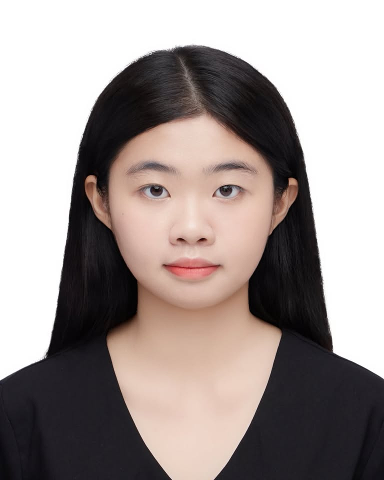
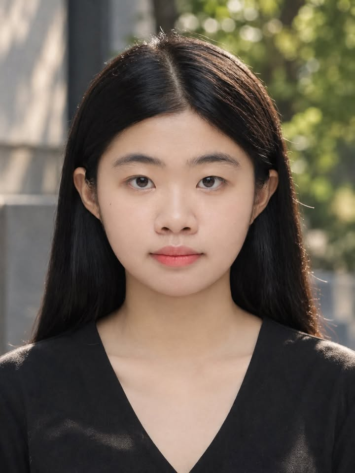
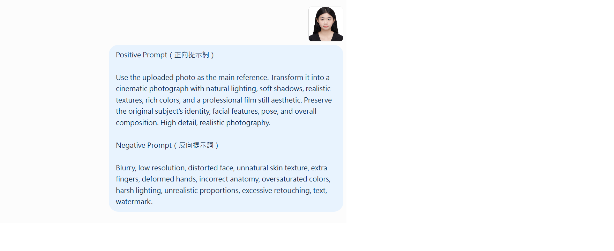
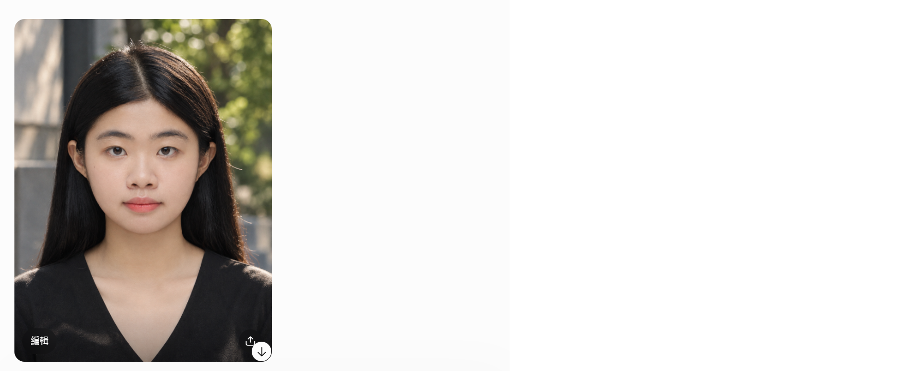

01. Original Photo 原始照片

02. AI Generated Image AI 生成圖片

03. Workflow 完整工作流
以下記錄從上傳原圖、輸入提示詞到生成圖片的過程。
Step 1：上傳原始照片與輸入提示詞

Step 2：生成圖片

04. Prompts 提示詞
Positive Prompt 正向提示詞
Use the uploaded photo as the main reference. Transform it into a cinematic photograph with natural lighting, soft shadows, realistic textures, rich colors, and a professional film still aesthetic. Preserve the original subject's identity, facial features, pose, and overall composition. High detail, realistic photography.
Negative Prompt 反向提示詞
This tool does not provide a separate negative prompt field. The desired result was guided through the positive prompt.
05. Reflection 個人心得
這次作業讓我學習到如何利用 AI 生成圖片，並透過提示詞控制圖片的風格與呈現效果。 在製作的過程中，我發現提示詞的描述會影響生成結果，因此需要清楚表達自己想要的畫面。 透過將原始照片與 AI 生成圖片放在一起比較，我能更清楚觀察兩者在光線、色彩與整體氛圍上的差異。 這次的經驗讓我了解到，AI 可以作為影像創作的輔助工具，但最後的成果仍需要透過自己的想法與判斷來調整。